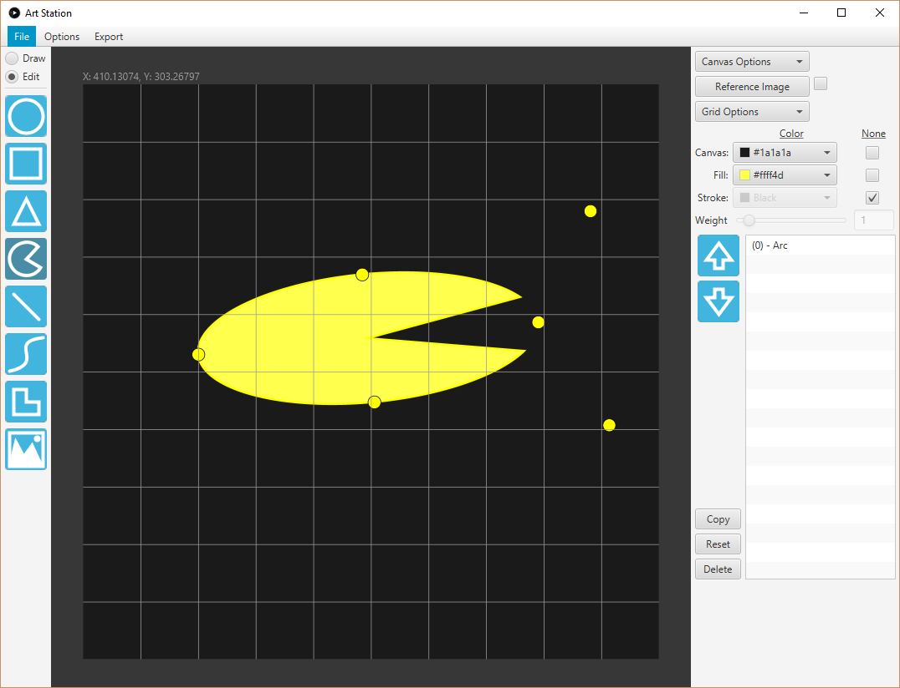

This application was created as a developer tool to aid in the creation of Processing sketches.
Various shapes can be drawn and editted on screen.
The export option can be used output the processing code to your clipboard or to create an image or SVG file.
This tool has been tested on Processing version 3.3.7 in Windows 10 and windows 7.
Art Station is open source on GitHub!
If you would like to contribute, see instructions in the README.
Please report bugs, glitches, questions, and requests on the issues tab.